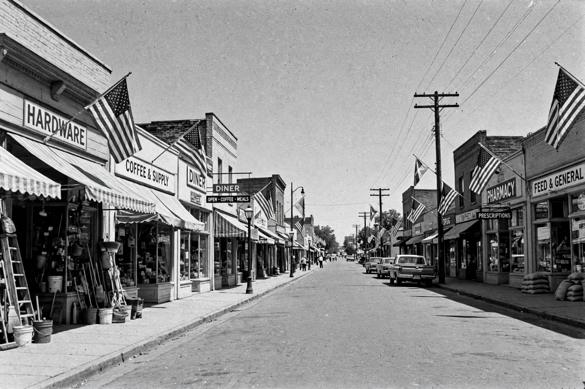

Top stories
AP top stories from around the globe

The Associated Press homepage presents its cooperative wire reporting in a clean grid: top stories, world and US news, politics, sport and explainers, written in AP style — factual, attributed and concise. Summarised generically here.
US news
State, national and weather coverage from AP bureaux.
Politics
Elections, government and policy reporting.
AP Sports
Scores, game stories and features.
Science and health
Space, climate, medicine and research news.